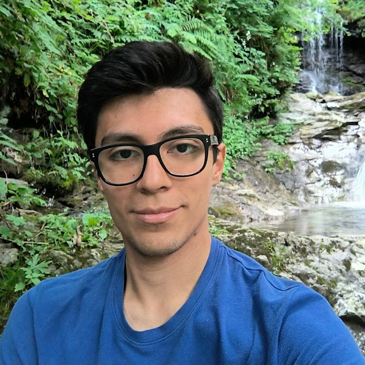

Alberto Bertoncini

- Email: alberto.bertoncini@unimi.it
- GitHub: github.com/Bertoncini
- Curriculum Vitae
I am Computer Science PhD Candidate at University of Milano, in particular I work with the OptLab and Connects Lab,
where I focus on advancing research in network service optimized deployment via Mathematical Optimization and Machine Learning techniques.
I worked in the same field as fellow researcher.
I also teach the Informatica e Biostatistica module (a.y. 2024/2025) in the Veterinary Medicine course,
guiding students through information technology and biostatistics concepts.
I also had a strong background as Data Scientist from my master degree and 2 years of work in enterprise environment.
All information on my personal website.